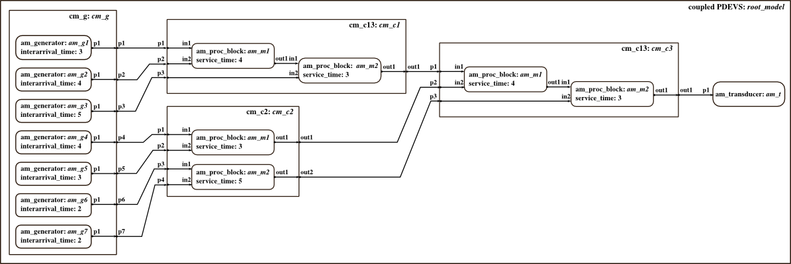

Initialization Script: Assembly Line with Predefined Coupled Models
Inits a complex model of an assembly line. Example is taken from master thesis of T. Schwatinski. Seven generators with different intergeneration times send workpieces to processing blocks. Processing blocks assemble two parts and send them to next processing blocks where more parts are added. A transducer counts completed workpieces. This script uses predfined coupled model classes from the modelbase instead of defining the coupled models here.
Contents
Basic models are taken from the "Assembly Line" example, folder DEVSPATH/01-atomic-modelbase/0-assembly_line.
Call: init_assembly_line
File: DEVSPATH/02-examples/discrete/0-assembly_line/init_assembly_line.m

Model Structure
Preparation
clc; global SIMUSTOP % to stop simulation by condition SIMUSTOP = 0; global HYBRID HYBRID = 0; % discrete-only simulation elapsed = 0;
Create the Model
Atomic models' classes: am_proc_block, am_generator, am_transducer.
NOTE: atomic model definitions are partly hidden in this initialization script. Incarnation of these subcomponents takes place in the constructor methods of the user defined coupled models cm_c13, cm_c2 and cm_g.
Coupled models' classes: cm_c13, cm_c2, cm_g.
% Instantiate coupled models cm_c1 = cm_c13('cm_c1',4,3); % sysparams service_time for atomic subcomponents are 4 and 3 cm_c3 = cm_c13('cm_c3',4,3); % sysparams service_times for atomic subcomponents are 4 and 3 cm_c2 = cm_c2('cm_c2',3,5); % sysparams service_time for atomic subcomponents are 3 and 5 cm_g = cm_g('cm_g',3,4,5,4,3,2,2); % sysparams interarrival_time for the 7 atomic subcomponents are 3,4,5,4,3,2, and 2 % Component for coupled model root_model inistates = struct('q',0); % the counter for incoming jobs am_t = am_transducer('am_t',inistates,elapsed); % Coupled model root_model root_model = coupled('root_model'); addcomponents(root_model,{cm_c1,cm_c2,cm_c3,cm_g,am_t}); Zid_root = {'cm_c1','out1','cm_c3','p1';... 'cm_c2','out1','cm_c3','p2';... 'cm_c2','out2','cm_c3','p3';... 'cm_g','p1','cm_c1','p1';... 'cm_g','p2','cm_c1','p2';... 'cm_g','p3','cm_c1','p3';... 'cm_g','p4','cm_c2','p1';... 'cm_g','p5','cm_c2','p2';... 'cm_g','p6','cm_c2','p3';... 'cm_g','p7','cm_c2','p4';... 'cm_c3','out1','am_t','p1'}; set_Zid(root_model, Zid_root);
After Incarnation
Clear all variables that are no longer used, display and check the outermost coupled. Set the observe flag to 1, so that all state variables are tracked automatically.
showall(root_model); Check(root_model); set_debug(root_model, 1);% show messages set_observe(root_model, 1);% track all state variables in s of atomics
Finally
Done! Now the root_coordinator can be called to simulate the model.
root_model = r_c_discrete(root_model,tstart,tend)
Choose tstart = 0, tend = 12 to simulate a period of time that can be compared to a handsimulation (scenario from master thesis of T. Schwatinski).
Note: debug_flag is set to 1 for the entire model, so you get simulation messages. Set debug_flag to 2, if you prefer stepwise simulation, or to 0, if you don't need any messages.
After simulation you can take a look at states of the processing blocs am_mx by executing the script compare_to_handsimulation.
Commands to initialize, simulate, analyse the example:
>> init_assembly_line_modelbase;
>> root_model = r_c_discrete(root_model,0,12);
>> compare_to_handsimulation;
DEVS Tbx Home Examples Modelbase << Back